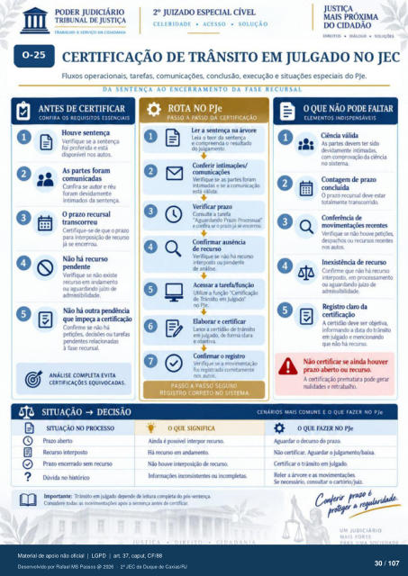

Transcrição automática em português, ainda não revisada. Confira grafia, prazos e termos jurídicos na imagem e no PDF antes de utilizar.
TRABALHO A SERVIÇO DA CIDADANIA
CELERIDADE • ACESSO • SOLUÇÃO
DIREITOS • • SOLUÇÕES
CERTIFICAÇÃO DE TRÂNSITO EM JULGADO NO JEC
Fluxos operacionais. tarefas, comunicações. conclusão, execução e situações especiais do PJe.
DA SENTENÇA AO ENCERRAMENTO DA FASE RECURSAL
ANTES DE CERTIFICAR
CONFIRA OS REQUISITOS ESSENCIAIS
Houve sentença Verifique se a sMtença
foi proferida e está digx»nivel nos autos.
As partes foram comunicadas
Corifira autor e réu foram devidamente
intimados da sentença. O prazo recursal
transcorreu Certifique-se que o prazo
para inteqnsiçào de já Se encerrw.
Não há recurso Verifique se existe
em andamento Ou aguardando juizo
adrnissibil&ie. Não há outra F"ncia
que irnFça a Confirme se não há
ou tarefas relacionadas
à fase recursal.
ANÁLISE COMPLETA EVITA
CERTIFICAÇÓES EQUIVOCADAS.
SITUAÇÃO -i DECISÃO
SITUAÇÃO NO PR(XTSSO
Prazo at»rto Recurso interpsto
Prazo encerrado sem rm•rso Dúvida no histórico
ROTA NO PJe
PASSO A PASSO DA CERTIFICACÀO
Ler a sentença na árvore Leia 0 teor da sentença
e compreenda o resultado do julgamento.
Conferir intimaçw Verifique se as partes foram
intimadas e se a comunkaçào está válida.
Verificar prazo Consulte a tarefa
Aguardando prazo Processual-
e cmfga o Mazo já erxerrcu. Confirmar ausência
de recurso Verifique se náo há r«urso
interposto ou pendente análise.
Utilize a funçào -Certificaçào de Trânsito em JulgMio-
PJe. e certificar
Lance a certidão de trânsito em julgMfo, de forma dara
e obÉtiva. Confirmar o registro
Vffifque se a foi re•gistrada corretarnente
rns autos.
PASSO A PASSO SEGURO.
REGISTRO CORRETO NO SISTEMA.
O QUE NÃO PODE FALTAR
ELEMENTOS INDISPENSÁVEIS
Ciência válida As partes devem ter sido
&vidamente intimadas. da c:iérria
no sistema. Contagem de prazo
concluída O prazo recursal deve estar
totalmente Conferérw•ia de
recentes Verifique se não houve
despachos Ou recurgs r«entes autos.
Inexistência de recurso Confirme que nào há recurso
interpsto. em prcxessame-to aguardando juizo
ximissibilidade. Registro claro da
A deve ser objetiva informando a data do trüSt0
em julgado e mencionarx±-o nào há
Não certificar se ainda houver prazo atRrto ou
A prematura gerar
o QUE SIGNIFICA
Ainda é pssivel interpr rEurSo. Há recurso em arxiamento.
houve interposição de r«urscx inconsistentes irrcxnlietas.
Imprtante: Trânsito em leitura cmpkta todas as avós a antes de certifrar
CENÁRIOS MAIS COMUNS E O QUE FAZER NO PJe
O QUEFAZER NO PJe
Aguardar 0 d«urso prazo. certificar. Aguardar 0 julgamento,'baixa.
Certificar o trânsito em julgab Reler a árvore e as
consultar o cartório/jUiZ• - ——J pr#laridade
UM JUDICIÁRIO
MAIS FOR IE
Ver também o infográfico original (página 30)
